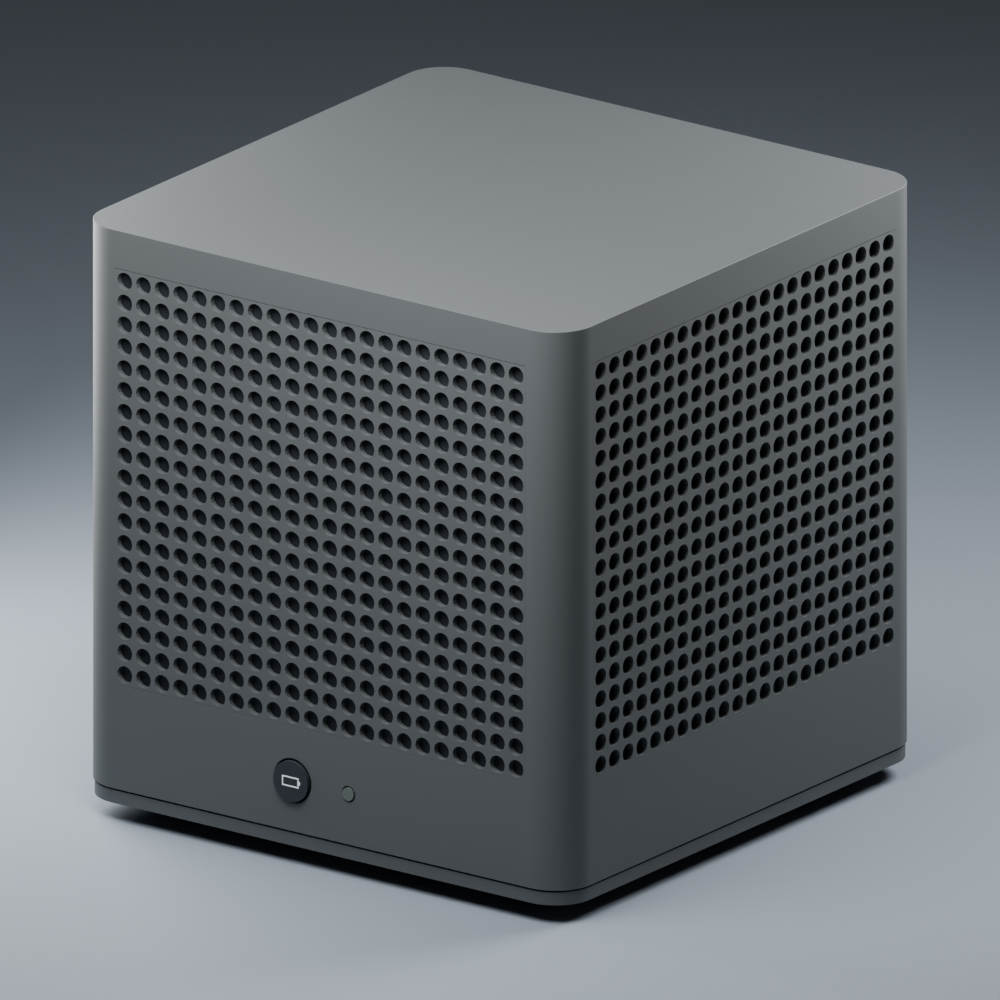
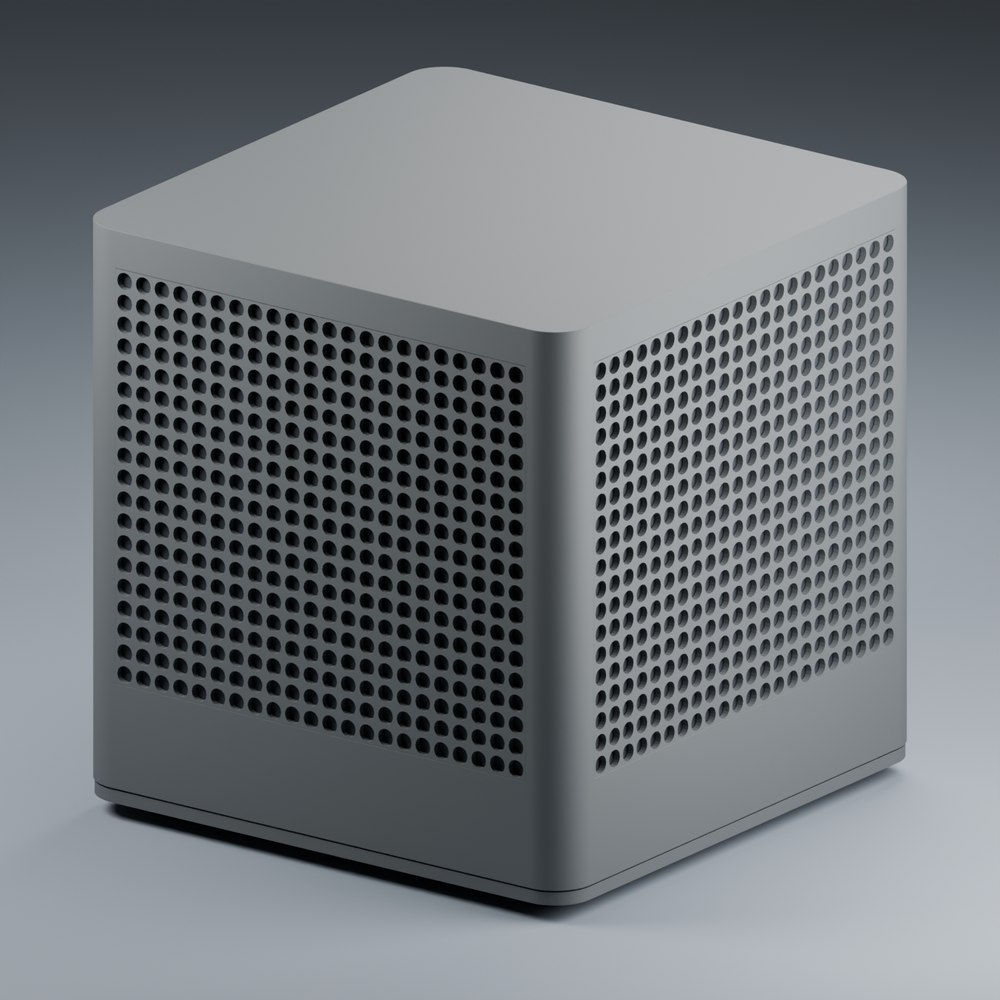
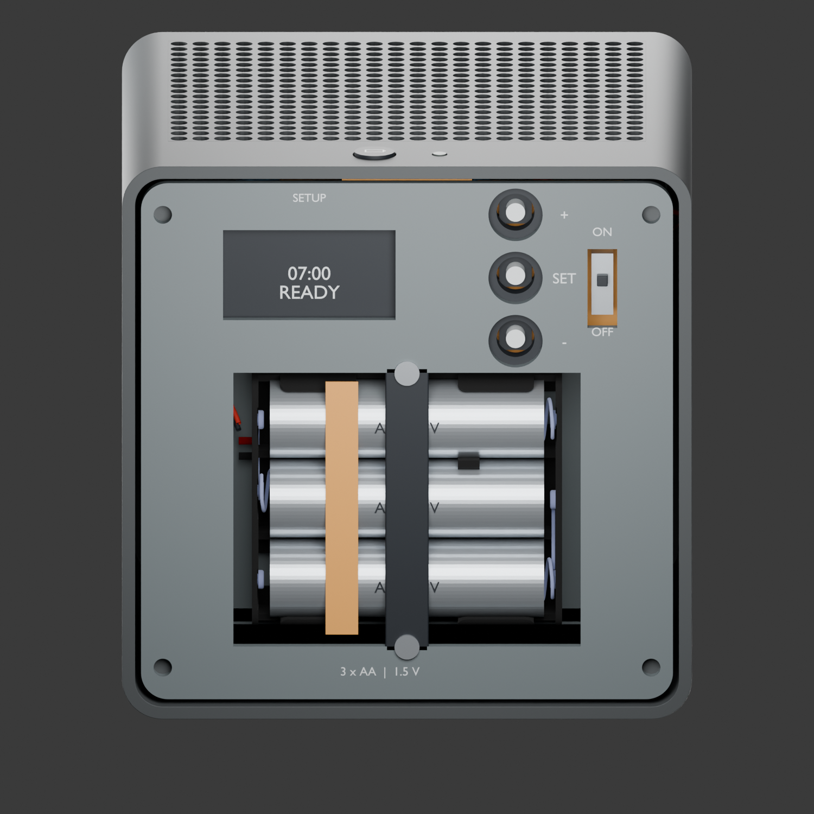
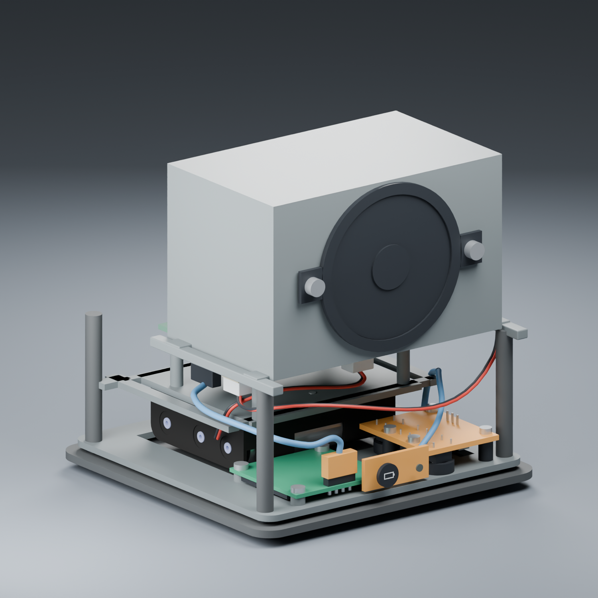
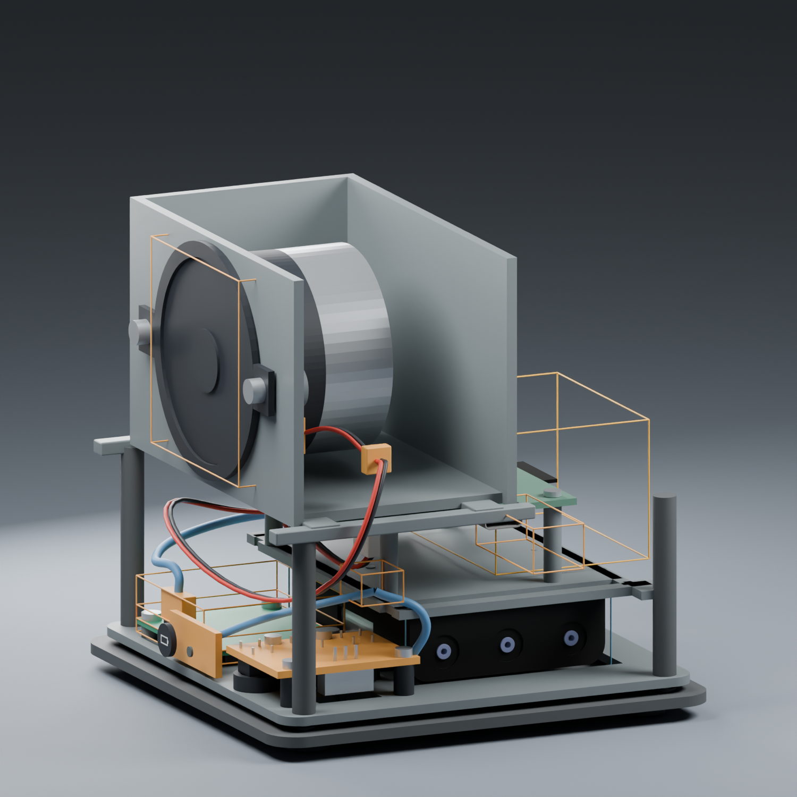
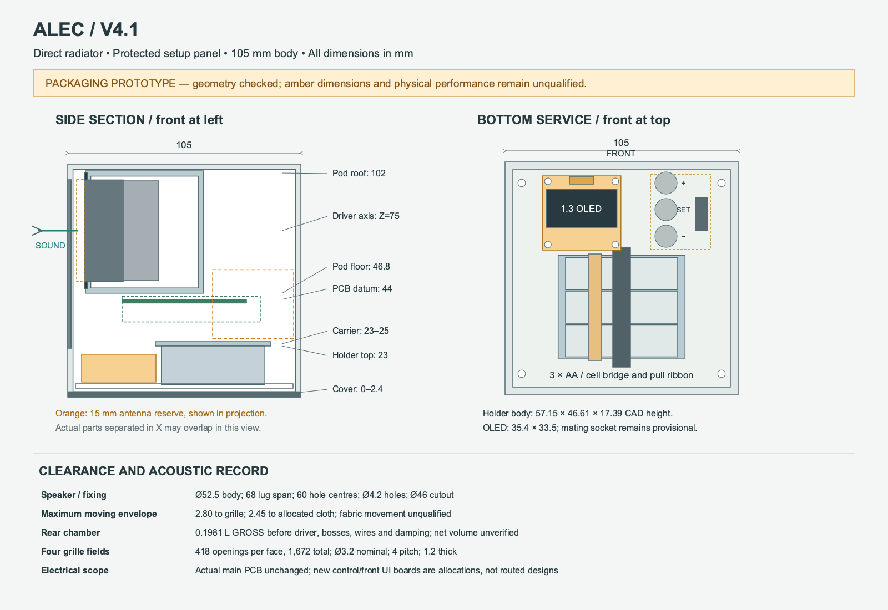

ALEC / v4.1
105 mm body · Direct front speaker · Four perforated walls · Protected bottom setup
55 nominal geometry checks passed. Physical acoustic, battery, thermal and radio tests are pending. Amber parts and new PCB interfaces remain provisional.

Exterior — one button and one normally dark lens
Matching perforations on the other two facesDirect driver and rear pod — roof and one wall hidden for inspection
Protected bottom setup face — outer cover removed
Actual PCB and component arrangement
Clearance allocations — orange RF volume
Dimensioned arrangement and limits